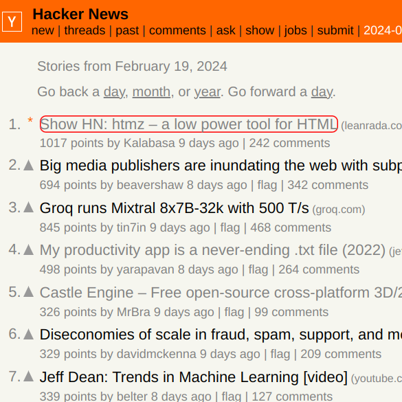
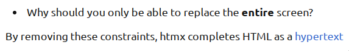
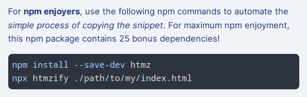
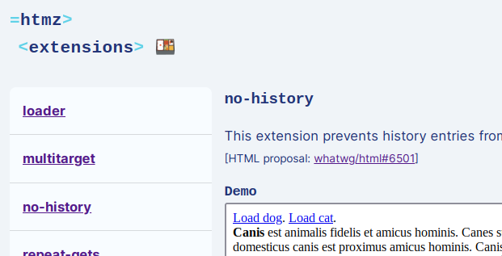

This post is not the usual programming post. It’s been an interesting week, I guess.
I just finished my mini side-project htmz, a snippet / library / microframework / whatever for HTML whose main feature was that it only weighed a total of 181 bytes. It almost fits inside a single ‘tweet’ (wait, the limit is now 280 not 140?).
Here is the entire framework in its final form:
<iframe hidden name=htmz onload="setTimeout(()=>
document.querySelector(contentWindow.location.hash||null)
?.replaceWith(...contentDocument.body.childNodes))"></iframe>
See the project documentation for more info on what it does.
I posted it on Hacker News, went to sleep because it was 3am at that point. Then the next morning it was at the top of HN!

I didn’t expect this at all. But naturally I rushed to the comments section which quickly grew too numerous for me to read. They were generally positive, and acknowledged the project’s hackyness and elegance (these adjectives usually mean opposite things). It was pretty cool! The top comment in the thread sums it up.
A bunch of common themes were raised. I guess I’ll write about them in this post.
Why htmz?
htmz was initially inspired by htmx, another web library/framework. One of htmx’s main features was that it provides the capability for any element, not just the entire window, to be the target for update by an HTTP request (e.g. by clicking a link you load a partial HTML update to the page).

I wondered for a bit then remembered that we already have iframes, a native HTML way for links to update not just the entire window, but a ‘part’ of the page. Granted, iframes are limited and not as dynamic as some of htmx’s operations like appends and deletions.
So I set out to make an iframe-only solution to this class of problems. htmz initially stood for ‘htmx zero’ or something like that, because you need exactly zero JavaScript to be able to use iframes, while htmx stood at around 16 kB compressed (decompresses to a total of 48 kB of JavaScript!).
Principles
The initial premise was that browsers already offer much of the required functionality out of the box. Unfortunately, iframes have lots of limitations and a bit of JS is needed after all. As the solution evolved, I needed to keep the amount of JS in check, otherwise I’d just reinvent existing libraries.
The main principle became “lean on existing browser functionality”. This meant, among other things:
- No click handlers. Browsers can handle clicks by themselves. No need for JS to intercept and babysit every interaction.
- No AJAX / fetch. Browsers can fetch HTML resources by themselves. In fact, this is a primary function of a browser!
- No DOM parsing. Browsers can load HTML by themselves. In fact, this is a primary function…
- No extra attributes. Scanning for and parsing extra attributes is a lot of JS.
I ended up with minimal JS that transplants content from the iframe into the main document. That was the only thing browsers don’t do (yet).
The only exception to this rule was the setTimeout wrapper which is to prevent browsers from automatically scrolling to the updated content on click. (It’s optional!)
Since the solution was not zero JS anymore, htmz was backronymised as Html with Targeted Manipulation Zones.
Was it a joke?
(short answer: maybe)
Starting with the name itself, htmz sounded like a parody of the more popular htmx. I thought it was obvious that this project was just a fun hack to share.
But some people took it too seriously. I know, this is HN, where serious startups and stuff are posted daily. Or rather, this is the Internet.
I was reminded of Poe’s law. On the other hand, the initial documentation for the project did give mixed vibes (it was a half-joke half-solution project after all). And the marketing bits were too good for the project’s own good.
This project has a favicon while htmx.org has none. Marketing overload! But really, I just enjoy polishing the little details in projects.
Orrr maybe I’m the only one who finds humour in a section called ‘Installing’ that, instead of telling you to install a package, tells you to simply copy a snippet. Orrr what about when ‘Extensions’ are not plugins but code you actually have to write yourself… Ha! Get it? 😂😂😂 Subversion of expectations, anyone? No? OK, fine…
In any case, I had my fun writing these aspects of the project!
I made an npm package for good measure:

Code golfing
Some commenters pointed out insights which led to significant reductions in the size of the snippet. Some even made pull requests, that I reviewed and merged (Am I an ‘open-source maintainer’ yet?).
My initial release started with 181 bytes:
<iframe hidden name=htmz onload="setTimeout(()=>
document.querySelector(this.contentWindow.location.hash||':not(*)')
?.replaceWith(...this.contentDocument.body.childNodes))"></iframe>
Turns out ':not(*)' is not necessary as a selector fallback. querySelector can accept null! Down to 176 bytes:
<iframe hidden name=htmz onload="setTimeout(()=>
document.querySelector(this.contentWindow.location.hash||null)
?.replaceWith(...this.contentDocument.body.childNodes))"></iframe>
Apparently, this is also unnecessary within inline attribute scripts when referring to the element it’s attached to. Now down to 166 bytes (its final form as of today):
<iframe hidden name=htmz onload="setTimeout(()=>
document.querySelector(contentWindow.location.hash||null)
?.replaceWith(...contentDocument.body.childNodes))"></iframe>
That’s about 90% of the original! I’m pretty sure this could be reduced further (setTimeout isn’t strictly required) but I left it as it was. This code golfing diversion has been fun and I learned about HTML spec stuff that I wouldn’t normally discover in my day job as a React framework user.
Knowledge sharing
Some commenters shared similar approaches and techniques. Some tips / workarounds on how to best utilise the snippet were thrown around. There were even discussions in the project’s Issue tracker on GitHub.
For one, the new Sec-Fetch-Dest header that someone mentioned is pretty cool. It lets the server know if the request is for an iframe or for a new tab, etc. Pretty handy for hypertext servers!
I learned lots and, not wanting to get these learnings lost into the archives, incorporated these tips into the main documentation, into the examples/demos, and some even became real-ish extensions:

It’s a multi-way exchange. htmz and its iframe shenanigans have apparently inspired the creation of new HTML frameworks, such as morphlex and htmf. I also saw people taking the idea into different directions, like using iframes to lazy-load HTML partials. I feel happy about having inspired people! There are even some who said so via the guestbook, which was especially nice!
Future
I think the htmz story is done and I’m already looking forward to my next project (the 7DRL challenge). It’s still getting some mentions in blogs, podcasts, here and there, but it’s not like I’m gonna turn this into some serious full-time open-source project with versions and releases and (lack of) funds and all that jazz.
GitHub activity (stars, issues, PRs) have slowed down as well. There’s not much you can work with 166 characters, after all.
But the idea lives on; may the snippet proliferate! :D